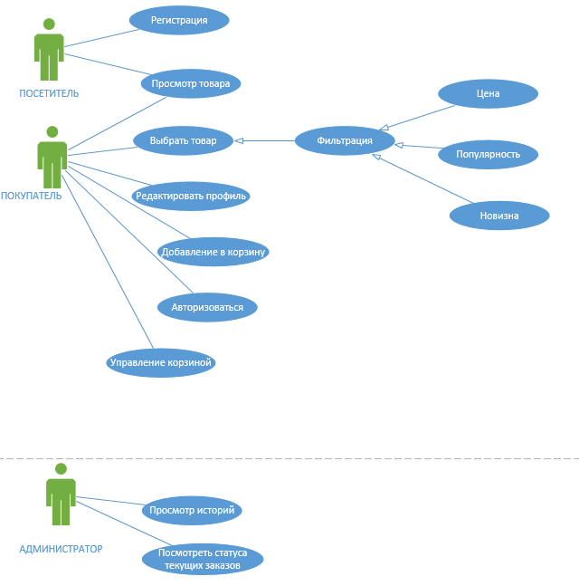
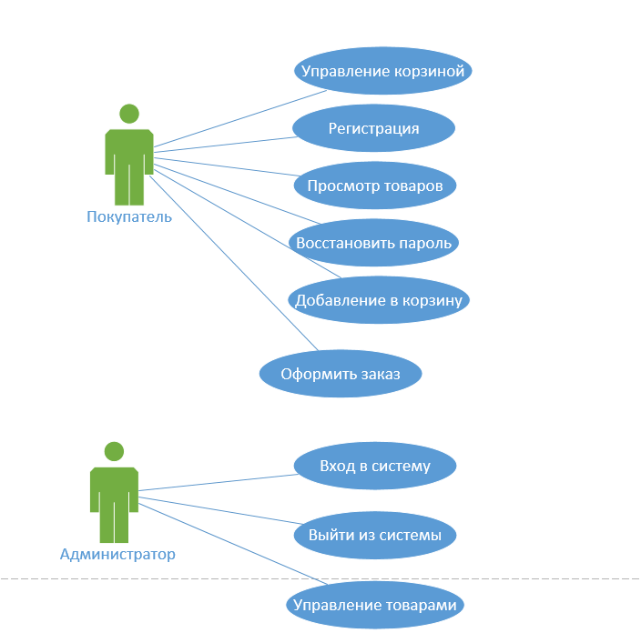

В этой работе я изучила построение диаграмм прецедентов, определение акторов и их вариантов использования.
Акторы: Покупатель, Администратор. Включает процессы регистрации, просмотра товаров, работы с корзиной и управления товарами.

Акторы: Посетитель, Покупатель, Администратор. Включает связи с фильтрацией (цена, популярность, новизна) и просмотром статусов заказов.

Поставьте оценку от 1 до 5 и оставьте комментарий.